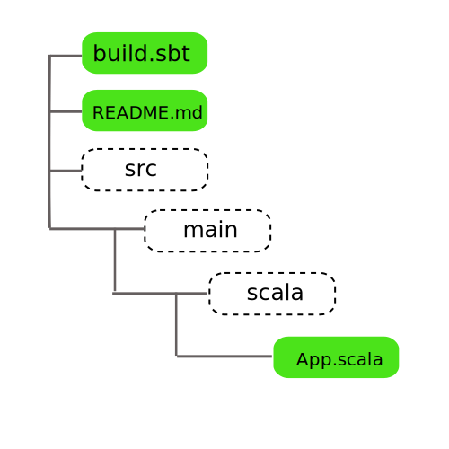

Getting Smart with Git
Who Am I?
Rehan Mahmood
Background with Git
- Started tracking development of Mozilla Firefox as a student
- Started using Mercurial when Firefox switched to it in 2006
- Learned Git and Mercurial as the debate about VCS of choice for The Kernel project started heating up
- Backed Mercurial over Git for long time
- Finally switched to Git in 2010 because of Git's superior handling of tags
Agenda
- Why Version Control?
- What is Git?
- Why should I care?
- How Git works?
- How will Git make my life better?
- How I can improve the lives of my fellow code monkeys with Git?
Why Version Control?
- Allows you to iterate over your code while keeping checkpoints to roll back
- Makes it trivial to share the codebase with other developers and collaborate
- Supports multiple versions of code for different environments based on levels of testing & confidence
Version Control Systems
| Generation | Networking | Operations | Concurrency | Examples |
|---|---|---|---|---|
| First | None | One file at a time | Locks | RCS, SCCS |
| Second | Centralized | Multi-file | Merge before commit | CVS, Subversion, Perforce |
| Third | Distributed | Changesets | Commit before merge | Bazaar, Git, Mercurial |
What is Git?
“Git is fundamentally a content-addressable filesystem with a VCS user interface written on top of it.”Pro Git, Section: Git Internals
What is Git?
- A Distributed/Decentralized shared repository of objects
- It is open-source and free to use
- Takes a unique and open design approach towards version control
- The openness of its design sometimes confuses people and make them think that it is too difficult
Why Git?
Git is The Future
- Practically replaced SVN and other proprietary solutions in both open source and proprietary systems.
- Advanced code management and collaboration tools like Github, Travis CI, & AWS
- Ready for
Cloud Development
Everything is Local!
Every operation is local, until you are ready to go public!
- init
- add
- commit
- branch
- merge
- log
Git is Speed!
- Git is orders of magnitude faster than other version control systems
- It is built for speed
The All Seeing Eye!
- Nothing gets past its watch!
- Extreme safeguards against on-disk data corruption
- Everyone has a copy of everything, less chance of accidental data loss
- Cryptographically immutable, makes malicious file tempering impossible without detection
Loves Branches
- Branches are very cheap (in computational sense)
- Git can handle merges automatically
It is Flexable
- Can support complex, non-liner development that more accurately reflects the real world.
- Git can handle as many development models as you can come-up with.
Unmatched Scalability
- Extremely scalable from personal use to thousands of developers
- Used by The Kernel Project since 2005, 534780 commits, 5277 commiters* and counting
Checked: August 8, 2015
How Git Works
A quick deep dive inside Git's mind
Everything is a Hash
- A content addressable file system
- 160-bit SHA1 hash computed from the contents of the given file
address = SHA1(header + content)
% git hash-object App.scala
545323645634654365436453646754746
% ls -al hello-git/.git/objects/54
drwxrwxr-x 7 ubuntu ubuntu 4096 Aug 19 03:56 .
drwxrwxr-x 4 ubuntu ubuntu 4096 Aug 19 04:22 ..
-rw-rw-r-- 1 ubuntu ubuntu 92 Aug 19 03:56 5323645634654365436453646754746
Working Directory
% ls -al hello-git/
total 16
drwxrwxr-x 4 ubuntu ubuntu 4096 Aug 19 04:22 .
drwxr-xr-x 9 ubuntu ubuntu 4096 Aug 19 03:53 ..
drwxrwxr-x 7 ubuntu ubuntu 4096 Aug 19 03:56 .git
-rw-rw-r-- 1 ubuntu ubuntu 321 Aug 19 04:22 .gitignore
-rw-rw-r-- 1 ubuntu ubuntu 5430 Aug 19 04:22 build.sbt
-rw-rw-r-- 1 ubuntu ubuntu 4330 Aug 19 04:22 README.md
drwxrwxr-x 2 ubuntu ubuntu 4096 Aug 19 04:22 src
drwxrwxr-x 2 ubuntu ubuntu 4096 Aug 19 04:22 target
Git Under the Hood
GIT_DIR
% ls -al hello-git/.git/
drwxrwxr-x 7 ubuntu ubuntu 4096 Aug 19 03:56 .
drwxrwxr-x 4 ubuntu ubuntu 4096 Aug 19 04:22 ..
drwxrwxr-x 2 ubuntu ubuntu 4096 Aug 19 03:56 branches
-rw-rw-r-- 1 ubuntu ubuntu 92 Aug 19 03:56 config
-rw-rw-r-- 1 ubuntu ubuntu 73 Aug 19 03:56 description
-rw-rw-r-- 1 ubuntu ubuntu 23 Aug 19 03:56 HEAD
drwxrwxr-x 2 ubuntu ubuntu 4096 Aug 19 03:56 hooks
drwxrwxr-x 2 ubuntu ubuntu 4096 Aug 19 03:56 info
drwxrwxr-x 4 ubuntu ubuntu 4096 Aug 19 03:56 objects
drwxrwxr-x 4 ubuntu ubuntu 4096 Aug 19 03:56 refs
Storage Models
The Four Elements
Air, Water, Fire & Earth of Git
Example Project Tree
% tree hello-git/
.
├── build.sbt
├── README.md
└── src
└── main
└── scala
└── App.scala
The Blob
- Every file is a blob
- File content is the focus, NOT its name
- Even a single bit change in the file will make it a new blob
- Moving, renaming file has no effect on its blob (SHA1)
- Conceptually it is similar to a UNIX inode, simplified
Blob Example
Inside a Blob Object
blob #[content size]\0
object HelloWorld {
def main(args: Array[String]) {
println("Hello, world!")
}
}
The Tree
- A tree captures the snapshot of a single directory at a given point in time
- It is just a file with references of its contents in the object store
- Conceptually it is similar to a UNIX directory
Tree Example
Inside a Tree Object
tree #[content size]\0
100644 blob e69de29bb2d1d6434b8b29ae775ad8c2e48c5391 README.md
100644 blob d8329fc1cc938780ffdd9f94e0d364e0ea74f579 build.sbt
040000 tree 73ddadc5a62d245db87fea379e015eeb3b04fd30 src
The Tree Model

The Commit
- A commit captures the reference to the top level tree of the project at the time of commit/snapshot
- It associates the referenced tree with the person who caused that tree to be created
The Commit Model
Inside a Commit Object
commit #[content size]\0
tree d8329fc1cc938780ffdd9f94e0d364e0ea74f579
parant 73ddadc5a62d245db87fea379e015eeb3b04fd30
author Rehan Mahmood<rehan.mahmood@bjss.com> 1243040974 -0700
committer Rehan Mahmood<rehan.mahmood@bjss.com> 1243040974 -0700
My Second commit.
The Tag
- A tag provides a way to referance a perticular commit/snapshot object by a name
The Tag Model
Inside a Tag Object
tag #[content size]\0
object 73ddadc5a62d245db87fea379e015eeb3b04fd30
type commit
tag 0.1
tagger Rehan Mahmood<rehan.mahmood@bjss.com> 1243040974 -0700
Initial release version 0.1
The Git Object Model
Git References
- Lightweight, movable pointers to commit objects
- Just plain files stored in .git/refs/*
- Not part of the object store
- Provide the base for the Git branching model
Object Model & References
The HEAD
- HEAD is a spacial file that records the reference to the of your current branch
Commits in Play
How Commits Build the Git Version Tree
Starting up
A New Repository
% git init
- Creates a new git repository in the current directory named .git
- You can create an optional ignore file named .gitignore
- Sets up a branch called master
- The name master is just convention, it could be changed or deleted like any other branch
Collaborating
On a Remote Repository
% git clone [url]
- Clones an existing remote repository in a subdirectory of your current path
- The remote repository could be just another directory in your local file system.
- The remote repository is identified as origin
- The name origin is just a convention
| Protocol | Remote | Operations | Authentication |
|---|---|---|---|
| local | /path/to/some/repo.git | pull/push | no |
| http | https://github.com/zfsonlinux/zfs.git | pull | yes |
| ssh | ssh://github.com/zfsonlinux/zfs.git | pull/push | yes |
| git | git://example.com/awesome.git | pull/push | no |
Snapshotting
The Index
% git add -A
- All git commands work on set files in git index or staging area
- Git takes a snapshot of your files when you add them to the index
Checking
The Status
% git status
- Tell the current branch and the state of your working directory
Committing
% git commit
- Commits the snapshot captured by your index to the HEAD
- Launch your default editor asking for your commit message
Branching & Merging
git checkout -b cool-idea
git commit
git commit
git checkout master

git commit
git tag -a 'v0.1'
git checkout cool-idea & git commit
git checkout master & git merge cool-idea
Remotes
Communicating with the world
- Remotes are references to branches of your project in other repositories
- They are bookmarks that reflect the state of remote branches as seen during your last communication with that remote repository
- They are read only and a tracking local branch would get created if you checkout
Git Workflow
More Commands
% git log
% git diff
% git stash
Social Coding
Hanging out with Cool Kids :)
Github
- It is a hosting service for your Git repository but with lots of bells & whistles
- Github provides a web interface to your Git repository
- It provides many collaboration tools like wikis, basic bug tracking, and release management
- It is free for open and public access projects, you have to pay for private access
- Companies can deploy in-house private instance called Github Enterprise
- It is like facebook for developers
Pull Request
- Allows you to announce to all interested parties that you are proposing a change to the project code
- Let others review, discuses, and comment on your proposed modifications
- Lets you and others send improvements by pushing follow up commits
Forking
- A fork is your personal clone of someone else's repository on Github
- Lets you contribute to project on which you don't have push access
Collaboration Models
On Github
Fork & Pull
- Lets anyone fork an existing repository and push changes to their personal fork
- No push access required on source repository
- Less friction for new contributors joining the project
- Very popular in open source projects and large scale projects
Shared Repository
- All contributors must be explicit granted push access
- Mostly used in small teams and private projects
- Uses feature and topic branches for change isolation and promotion
Git in Action
Demo
Thank you!
Question?
If you have any suggestions for improving this presentation, please fork it @Github
https://github.com/rehanone/slides-git
and submit a pull request
Further References
Official Git site
http://git-scm.comBooks
Pro Git Second Edition by Scott Chacon & Ben Straub
Slides
- Getting Git by Scott Chacon
- Starting with Git & GitHub by Nicolás Tourné